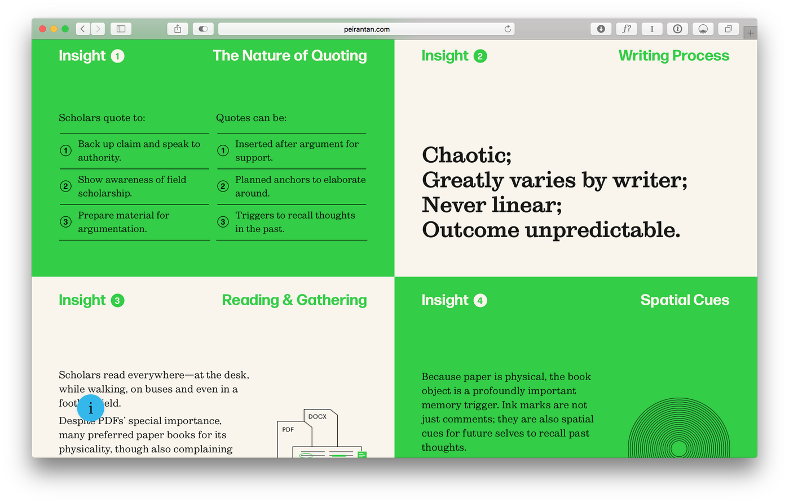

Clarendon vs. Sutro
History of each typeface
Clarendon
Description of Clarendon typeface.
Sutro
Description of Sutro typeface.
Comparison
Similarities

Differences
Examples and visual references
Clarendon

Sutro

